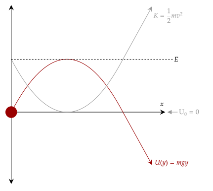

Let's now generalize to any conservative force and see what happens. First, recall that the change in potential energy is equal to the negative work done by conservative force. Then, we break the work into its line integral form.
This gives us an explicit formula for the potential energy function for any conservative force. Of course, the initial potential energy and the initial position are interconnected, and we can thankfully choose the value of it to whatever we so please.
Exercise 1
Show that the following is the gravitational potential energy using calculus. Note that if the initial potential energy is set to zero, the constant term drops out.
Solution
We set the coordinate system such that the origin is the initial position and the final position is somewhere on the cartesian plane. The formula for the potential energy function is as follows.
Once again, we break the integral's dot product into component form. The horizontal component drops out as usual, since weight has no horizontal component.
Problem 1
In one dimension, the magnitude of the gravitational force of attraction between a particle of mass and one of mass is given by the following equation.
In the equation, is a constant and is the distance between the particles. What is the potential energy function? Assume that the potential energy function approaches zero as the distance between the two particles approach infinity.
Solution
We use that fact that the potential energy function is zero at infinity, so we set our initial position there. Since the function only has a horizontal component, we break down the dot product to its components.
Note also that since this is an attractive force, the sign of the function must be negative.
One thing to do is note the final sentence, saying that this approaches zero as the distance approaches infinity. If distance approaches infinity, then the first term drops out.
This gives a value for the initial potential energy. Thus, we have the following potential energy function.
One thing to note is that since we have a function, we can actually plot out the potential energy with respect to position. This gives us what is called a potential energy diagram. For example, let's draw the potential energy diagram for the gravitational potential energy.
Since we only care about the vertical position, let's consider the same projectile which we considered when we first analyzed the conservation of energy. We also plot the kinetic energy of the projectile. Note that we have chosen to plot it with respect to the x-position; if we plotted it with respect to the y-position, it would look like a straight line. See Exercise 2 below for that graph.

If we add the two graphs together, notice that they add up to the mechanical energy; this makes sense based on what we saw before. Further, adding an initial potential energy just shifts the graph up and down like adding a constant to a graph, which overall doesnt change the constant mechanical energy.
This interaction gives us some hope that these potential energy diagrams do have some sort of relation to the motion of the object; we can see this even more if we manipulate the equation we have for the potential energy given a conservative force. We know that forces cause motion, so let's try to isolate the force.
Let's assume that, for now, the force is one dimensional; let's say weight, for example. When we break it down, the horizontal component drops out.
Now, let's try differentiating with respect to position; this remove the integral and just leaves us with a description of the force. Further, notice how the constant initial potential energy drops out. We are then left with this expression.
We see here that the negative derivative with respect to position of the potential energy function is equal to the conservative force. If we generalize this to any one-dimensional conservative force, we see that the following holds, then. The negative derivative of the potential energy function for a conservative force is equal to that conservative force.
This relation is very, very powerful; it helps us visualize what a potential energy diagram is telling us. It tells us that the negative slope of the potential energy function at any point corresponds to the force acting on the object.
Exercise 2
Below is the potential energy diagram for the gravitational potential energy of a ball thrown up, reaching a maximum height with respect to the y-component of its position.
Show, using calculus and via the graph, that the force of weight is constant throughout the motion, and it has a magnitude of .
Solution
Looking at the graph, it is a linear function with slope . This tells us the slope is constant, and thus the force creating the potential energy function, the force, is constant.
If we differentiate it with respect to position and negate it, we get the force itself, which resolves to the same properties.
Note the negative sign out front, which implies that we set the gravity to point downwards. This is a quirk of our coordinate system, that we set "going up" as positive.
Exercise 3a
(HRK E12.29a) A particle of mass 2.0 kg moves along the x axis through a region in which its potential energy varies as shown below.

Calculate the force acting on the particle at .
Solution
The force acting on the object at that position is the negative slope of the function at that point. Given that its a line, we just get the slope normally. Its slope goes down 14, and then goes right 3 units. This gives us a slope of .
The force acting on it then is N, or 4.7N.
Exercise 3b
(HRK E12.29c) When the particle is at , its velocity is 2.0 m/s. How fast is it moving when it is at ?
Solution
We compute for the kinetic energy at that position, becoming the initial kinetic energy. The final kinetic energy will give us the velocity at the final position.
Now, we can use the conservation of energy to find the final kinetic energy, which will give us the final velocity. We have the initial and final potential energy, after all.
Let's now just plug in.